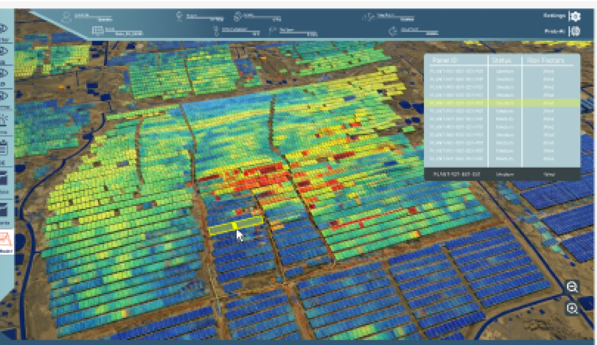
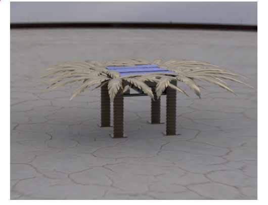
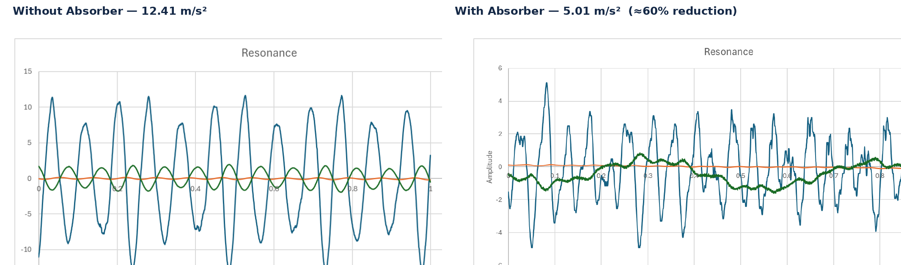
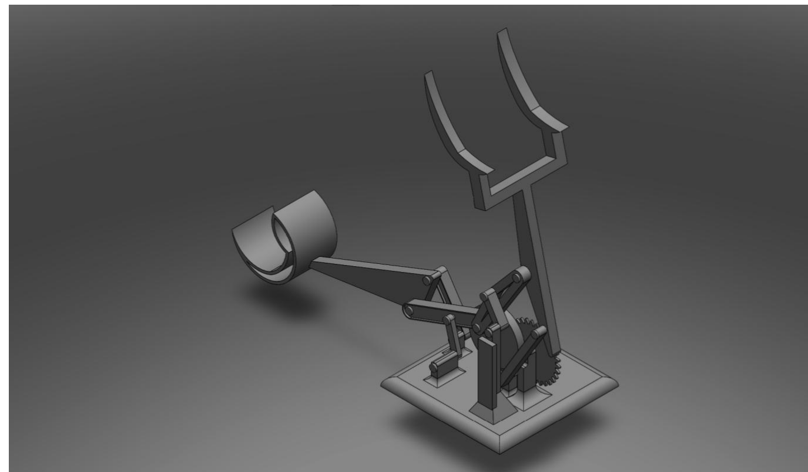

Summary
High-performing Mechanical Engineering student focused on Aerodynamics, Heat Engines, and Aerospace Applications, with a Computer Science minor in machine learning and database systems. Recognized on either the Dean's List or Vice President's List every semester since beginning university, consistently placing among the top students in the cohort.
Experienced in renewable-energy asset management, wind-turbine diagnostics, SCADA analysis, CFD, mechanical design, and failure assessment. At Iberdrola, introduced a new turbine-analysis methodology with promising potential for detecting intermediate and catastrophic failures. Leads a Q-Chem-sponsored multidisciplinary senior design project coordinating more than 10 students across Mechanical, Chemical, Electrical, and Computer Science disciplines to reduce VOC emissions from floating-roof storage tanks.
Award-winning innovator and researcher with experience in solar-panel fault monitoring, sustainable product development, and AI-driven parametric CAD, with particular interest in sustainable energy, advanced engines, turbomachinery, aerospace engineering, and data-driven engineering.
Skills
Goals
Building toward a career at the intersection of sustainable energy and aerospace/turbomachinery engineering — combining data-driven diagnostics (SCADA, predictive maintenance) with mechanical design and CFD to improve the reliability and performance of energy and propulsion systems.
Experience
Asset Management Engineering Intern
June 2026 – August 2026- Unplanned blade structural damage is one of the costliest failure modes in wind-turbine asset management — a single blade replacement, crane mobilization, and turbine downtime can run well into the millions of dollars, especially when the damage is only caught after it becomes severe. This motivated an independent investigation into whether existing SCADA data alone could reveal early warning signs, long before that point.
- Developed a new data-driven methodology for detecting and assessing intermediate and catastrophic wind-turbine blade failures, demonstrating promising potential beyond the existing analysis methods used by the team. The key finding was that conventional power-curve and global Cp-lambda analysis fail to isolate blade damage because they ignore pitch angle — splitting the same data by pitch band exposed distinct aerodynamic curve families invisible in the standard view.
- Traced the Delta Lambda 90 metric across 2020–2024 within the two most reliable pitch bands and found a multi-year decline leading into the November 2023 blade-damage detection date, followed by a recovery after the repair — showing that this metric, read as a trend rather than a single-year snapshot, can flag blade structural damage before it becomes severe, and produced a concrete roadmap for a future pitch-conditioned AI fault classifier built on that signal.
- Analyzed large SCADA and operational datasets using Python, Pandas, SQL, and Microsoft Excel to evaluate turbine performance, abnormal trends, stoppages, downtime patterns, asset availability, and operational condition.
- Investigated wind-turbine failure modes and mechanisms to support asset health assessment, predictive maintenance, and maintenance decision-making.
Multidisciplinary Project Leader & Mechanical Design Engineer
Sep 2026 – May 2027- Leading early-stage development of an economically justified retrofit package for Q-Chem external floating-roof tanks to reduce summer volatile organic compound (VOC) emissions.
- Coordinating more than 10 students across Mechanical, Chemical, Electrical, and Computer Science disciplines, integrating mechanical design, hazardous-area instrumentation, SCADA monitoring, digital-twin verification, prototyping, safety, and economic assessment.
- Responsible for CFD simulation of airflow around the tank and the design/optimization of a wind-shield system to reduce effective wind velocity and wind-driven evaporative losses.
- Collaborating with Chemical Engineering students to design and develop a vapor recovery unit (VRU) for capturing and recovering hydrocarbon vapors.
- Supervised by Dr. Sadok Sassi and Dr. Ahmed Sleiti.
MEP Design Intern
June 2025 – August 2025- Assisted in mechanical drafting, modeling, and design of HVAC, plumbing, and fire-protection systems using Revit MEP and HAP.
- Applied IPC, ASHRAE, and NFPA standards during system layout, coordination, and documentation.
- Supported multidisciplinary coordination and interpretation of construction drawings.
Engineering Tutor (Part-Time)
Sep 2025 – Present- Tutor students in Thermodynamics, Newtonian Mechanics, Mechanics of Materials, and Probability & Statistics.
- Deliver concept-driven explanations and exam-focused problem-solving support.
Innovation Grant Researcher — AI for Parametric CAD
Ongoing- Developing an AI-driven system for automated parametric CAD generation, integrating SolidWorks modeling, macro-based coding, Python pipelines, and structured geometry datasets.
- Supervised by Dr. Abdeldjalil Bennecer.
Research Methodology Intern
May 2024 – August 2024- Conducted experimental research in the Driving Simulation Lab and analyzed behavioral data using Python.
- Contributed to technical reports and academic poster presentations.
Projects & Awards

PRISM — Probabilistic Risk Identification for Solar Micro-Cracks
What began as a 2nd-place concept at the QRDI x Iberdrola Innovation Competition is now being developed further into either a startup venture or a formal research proposal. PRISM is an AI system that estimates the probability of micro-crack initiation and growth in individual photovoltaic panels by fusing three data streams per panel: local weather conditions, electrical performance history (current, voltage, power output trends), and operational history (runtime, thermal cycling, prior fault events). Rather than relying on a single inspection snapshot, this gives each panel a continuously updated risk score, so operators can prioritize inspection and maintenance before a crack propagates into a measurable output loss. Undetected micro-cracks silently degrade panel output and can drive an estimated 5.93 million USD in hidden losses per utility-scale solar farm over its lifetime; the underlying venture materials were modeled against a reference deployment profile based on the Al Kharsaah Solar Power Plant, Qatar (800 MWp).
Profitable from Year 1, with a go-to-market plan targeting 30 solar farms by Year 10. The venture package includes a full investor pitch deck, an economic feasibility report, and a market strategy report covering the competitive landscape and target segments.

Shamsiya — Solar-Powered Cooling Canopy
A palm-leaf-inspired outdoor canopy with integrated solar-powered cooling, built to address extreme summer heat in Qatar. Photovoltaic panels charge an onboard battery that runs an active cooling module — a vapor-compression and desiccant-dehumidifier system — bringing ambient temperature under the canopy down from roughly 40°C to about 21°C. Validated the thermodynamic cycle in Aspen HYSYS and built the full mechanical assembly, structural frame, and canopy geometry in SolidWorks.
Presented as a full venture at Injaz Al-Arab, including market sizing across B2B (hospitality, real estate, education, residential) and B2C segments, a costed 3×3×3 m flagship model, and a capital raise of 71,531 QR from 2,862 shares against a six-month revenue forecast of 80,000 QR.
Q-Chem VOC Emission Reduction Retrofit
CFD simulation and wind-shield design for external floating-roof storage tanks, paired with a vapor recovery unit to capture hydrocarbon vapors and reduce summer VOC emissions.

Tuned Vibration Absorber for a Cantilever Beam
Designed, modeled, built, and experimentally tested a passive tuned vibration absorber for a brass cantilever beam (490×40×1 mm) excited by a DC motor with an eccentric mass. Beam behavior was first predicted with a MATLAB single-degree-of-freedom model and SolidWorks FEA, then validated experimentally using accelerometer-based data acquisition — a 7 g compression-spring absorber was tuned to the beam's dominant measured response near 12–13 Hz. With the absorber attached, the measured acceleration amplitude dropped from 12.41 m/s² to 5.01 m/s², a real, instrumented reduction of about 60% — though not the complete anti-resonance cancellation the ideal model predicts. The report's root-cause analysis traces the shortfall to an invalid small-angle assumption (the thin beam was already statically deflected under its own load before vibrating), clamp compliance, and spring-stiffness uncertainty, and closes with a concrete redesign plan: a stiffer beam, a calibrated and guided absorber, and a more rigid clamp.
Team of three (Group 8) for Dr. Mohammad Roshun Paurobally's Mechanical Vibrations course — responsible for the SolidWorks modeling and modal/harmonic analysis. The full final report documents the mathematical model, MATLAB code, prototype construction, experimental test matrix, root-cause analysis, and recommended design improvements in detail.
Continuous-Motion Machine Design
Designed and manufactured a mechanical machine capable of maintaining continuous revolutions for more than 30 seconds under machine design constraints.

Hand-Cranked Multi-Link Lifting Mechanism
Reverse-engineered a "perpetual lifting machine" seen in a reference video into a fully analyzed six-bar linkage mechanism, driven by a single hand crank and synchronized by an integrated spur-gear pair, where two hooks alternate lifting an object to a higher level as the crank turns. Verified the mechanism's one degree-of-freedom motion with the Kutzbach mobility criterion, then modeled it in Linkage software before building a full SolidWorks assembly. Derived closed-loop vector equations for position, velocity, and acceleration by hand and cross-checked them against SolidWorks Motion simulation plots and a hand-derived joint-force matrix. Built and iterated a 3D-printed physical prototype — replacing failure-prone printed bolts with steel ones, filleting support columns after an early structural failure, and hollowing/drilling the hook to cut weight — and validated it against the simulated motion.
Team of four (Group 9) for Prof. Dr. Asan Abdul Muthalif's Mechanical Mechanisms course. The final report matched simulated and experimental motion closely, with deviations traced to 3D-printing tolerances, joint play, and friction — and documents the full workflow from concept sketch to CAD, kinematic/dynamic analysis, and prototype fabrication.
Certifications & Honors
Certifications
- Academic Excellence — Dean's List or Vice President's List in every completed semester, Qatar University
- BIM Modeler Training Program — Arabian Infotech
- Revit for Mechanical & Plumbing Design — LinkedIn Learning
- Revit: Sprinkler Design — LinkedIn Learning
- Research Methodology Internship Certificate — Qatar University
Languages
Contact
Mohamed Elsherbini
Open to research assistantships, internships, and full-time roles in mechanical, aerospace, and renewable-energy engineering.